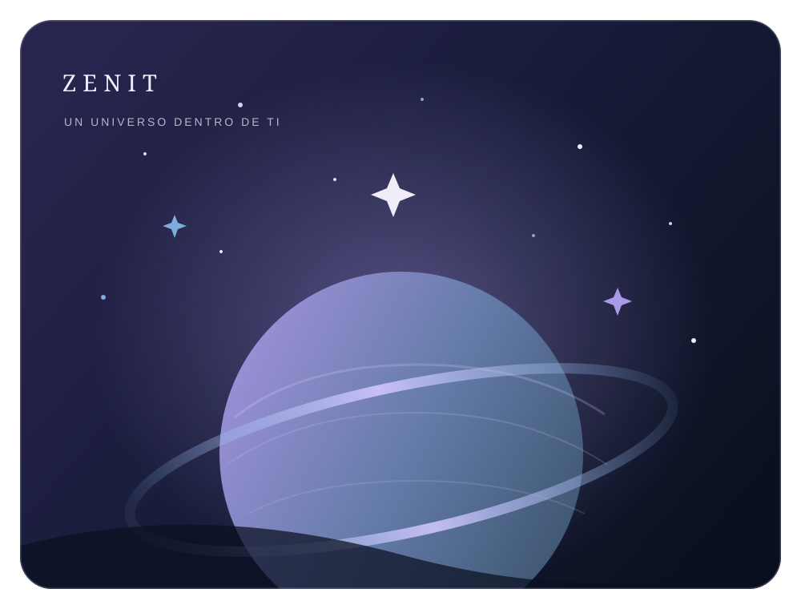

Un proyecto hecho con intención
Un lugar para volver a ti.
ZENIT nació para acompañar esos momentos en los que una palabra puede abrir espacio, dar calma o recordarte que no estás detenido: también estás creciendo.
Cada frase y cada sección busca ofrecer un respiro sin prisa, con respeto por todo lo que estás sintiendo.


Una frase para guardar
“Incluso en tus noches más largas, dentro de ti sigue existiendo un lugar capaz de encontrar la luz.”
Gracias por visitar ZENIT y hacer de este espacio parte de tu camino.
Detrás de ZENIT
Creado por Jesús Eduardo Hernández
¿Quieres compartir una idea o ponerte en contacto? Puedes escribirme a:
bernardohernandez.je@gmail.com